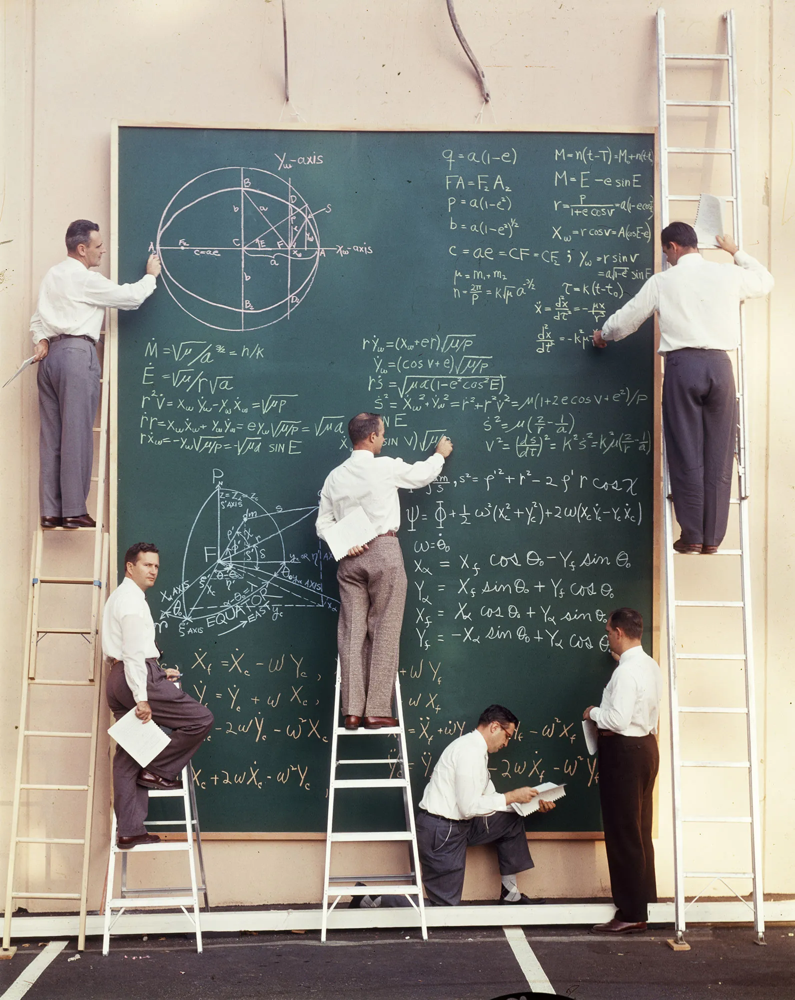
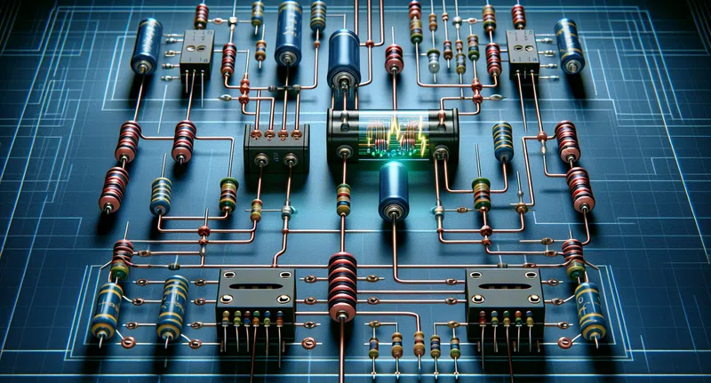
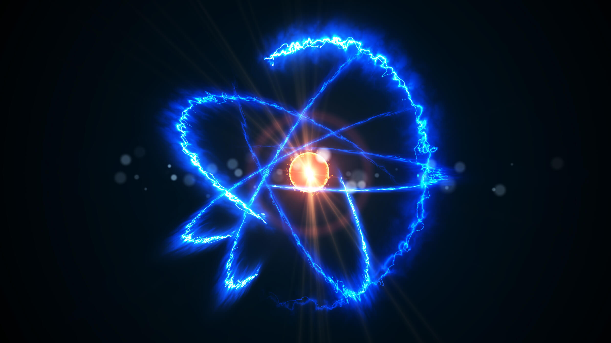
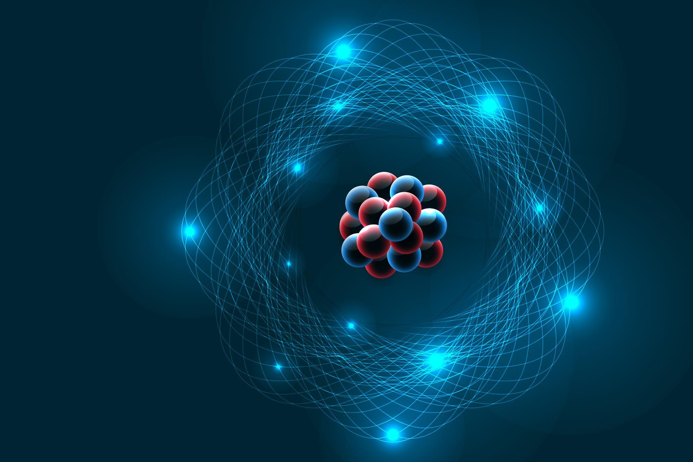
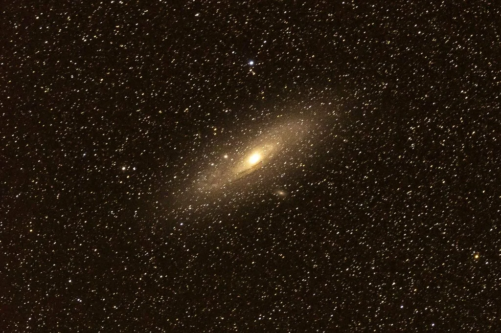
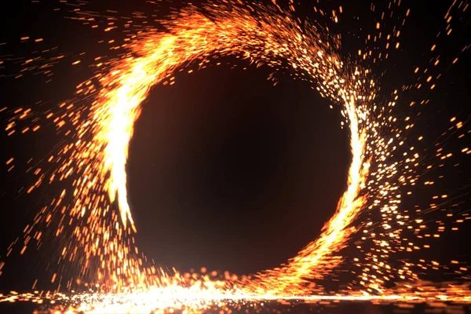

Galería de Fotos de Física
Ondas y Vibraciones
Ondas en el agua
Vibraciones y frecuencias
Mecánica Clásica
Movimiento y dinámica

Leyes de Newton
Electricidad y Magnetismo

Circuitos eléctricos
Magnetismo y campos
Física Cuántica

Partículas subatómicas

Modelo atómico
Astronomía y Cosmología

Estrellas y galaxias
Planetas y sistemas solares
Termodinámica

Procesos termodinámicos
Transferencia de calor
Created by Alejandro Zuate